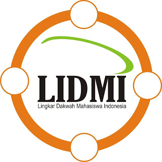

KEBERLANJUTAN TARBIYAH DI KAMPUS KADER WAHDAH

- Sehubungan telah keluarnya pengumuman kelulusan Siswa SMA dan Seleksi Nasional Masuk PTN (Jalur Undangan/Bebas tes),oleh karena itu,mohon kepada seluruh kader dan simpatisan Wahdah Islamiyah Se-Indonesia agar mengirimkan data dirinya yang dinyatakan LULUS SNMPTN Di Daerah: 1.Makasaar 2.Kendari 3.Palu 4.Manado 5.Yogyakarta 6.Surabaya 7.Malang 8.Jakarta 9.Tanjung pinang 10.Samarinda 11.Bone (PGSD Bone) 13.Gorontalo 12.Malaysia (khususnya di Universitas Teknologi Malaysia (UTM) dan Internasional Islamic University Of Malaysia (IIUM)) Dengan format: Nama: HP: Nama Murobbi: Marhalah (Lama Tarbiyah): Tempat Lulus (Jurusan dan Universitas): CONTOH Nama: Fulan HP: 085255877023 Nama Murobbi: Ust.Fulan Marhalah: Ta’rifiyah (lama tarbiyah 1 tahun 2 bulan) Tempat lulus: Jurusan pendidikan dokter UNHAS InsyaAllah,para pengurus LIDMI/LDK di daerah tersebut akan berusaha memfasilitasi: 1. Keberlanjutan TARBIYAH 2. Kos/Pondokan yang SYAR’I 3.Membantu Segala Proses PENDAFTARAN ULANG dan MASA ORIENTASI KAMPUS Akan lebih baik jika dibuat dalam format surat rekomendasi resmi dari DPD ke LIDMI Kirim ke email: lidmipusat@gmail.com. CP: Akh Syahdam 0852-5535-0648 (Tlp/sms/Wa) #Mari Terus Semarakkan Euforia Muktamar tapi tetap Memberikan Perhatian Besar Terhadap Kaderisasi Ttd Ketua LIDMI Pusat Short Link: Sumber Tulisan: http://wahdah.or.id/keberlanjutan-tarbiyah-di-kampus-kader-wahdah/